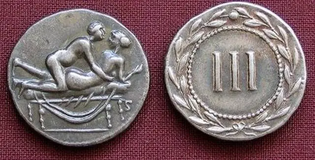

1. A Evolução das Notas de Papel
Embora Roma não tenha emitido notas de papel, a China foi a primeira civilização a utilizar notas de papel como moeda, já durante a dinastia Tang (618-907 d.C.), muito tempo após a queda do Império Romano. Essas notas eram inicialmente usadas como uma forma de representação de dinheiro, em vez de metais preciosos.

2. Numismática Moderna e as Moedas Romanas
Hoje, a numismática se refere ao estudo de moedas antigas e notas de diferentes civilizações, incluindo a Roma Antiga. O estudo das moedas romanas continua a ser popular entre colecionadores, historiadores e museus. Moedas de imperadores romanos, como César, Augusto, Trajano, e outros, são altamente valorizadas, pois fornecem informações sobre a política, economia e sociedade da época.